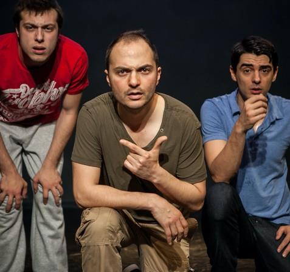

THEATRE · RESEARCH · DIGITAL EXPERIENCE
Sahne, teknoloji ve deneyim arasında.
Oyunculuk, yönetmenlik ve akademik araştırmadan VR/XR tabanlı yaratıcı projelere uzanan disiplinlerarası bir üretim pratiği.

01 / YAKLAŞIM
Bir hikâyenin yalnızca ne söylediğiyle değil, seyircide nasıl yaşandığıyla ilgileniyorum.
Canlı performans, dramaturji, araştırma ve yeni teknolojiler arasında çalışan bir sahne pratiği.
02 / SEÇİLİ ÇALIŞMALAR
Sahneden araştırmaya.
03 / PROJELER
Sahnenin sınırları nerede biter?
04 / AKADEMİ
Pratik ile araştırma arasında çift yönlü bir ilişki.
Sahne sanatları, dijital performans, sanal gerçeklik ve seyirci deneyimi üzerine akademik çalışmalar.
Akademik profil →05 / İLETİŞİM